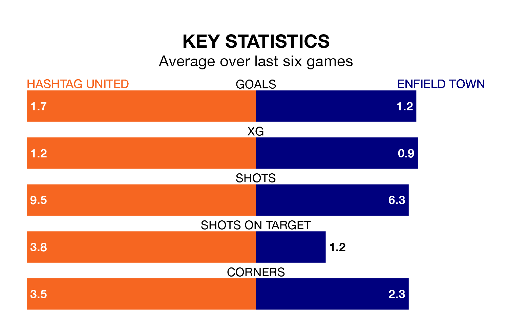

Hashtag United welcome Enfield Town to Coles Park on Saturday looking to pick up points to end their five-game losing streak.
Hashtag's struggles have left them with just three points from their last six Isthmian Premier Division matches, while their opponents have earned 10 from a possible 18.
With 46 goals in 24 games so far this season, Enfield are scoring more than average in the league with 1.9 goals per game. And they are conceding fewer than average, letting in 36 goals at a rate of 1.5 per game.
Hashtag, meanwhile, are average scorers, with 1.6 goals per game. They have conceded 1.7 goals per game.
Town are fourth in the table after 24 games, of which they have won 13 and drawn five, earning 44 points.
United are six places behind the visitors in 10th, with nine wins and eight draws putting them on 35 points.
Hashtag's last match was on Monday, a 3-2 loss against Lewes.
Enfield drew 1-1 with Horsham last time out, on Tuesday.
Updated: 13:09 (UTC), 17/01/24